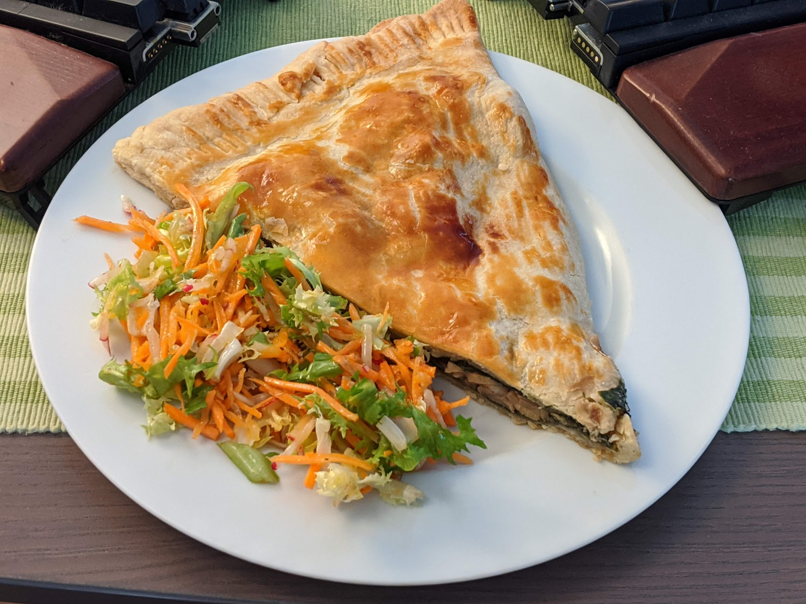

Tourte panais et noix de pécan

Pour 4 personnes :
- Deux pâtes brisées
- 400g de panais
- Un gros oignon
- Une gousse d'ail
- Deux branches de romarin
- 200mL de vin blanc
- 300mL de bouillon de légumes
- Trois clous de girofle
- Une étoile de badiane
- Une cuillère à café de noix de muscade en poudre
- 100g de noix de pécan
- Deux cuillères à soupe de purée d'amandes
- 200mL de crème liquide
- 50g de feuilles d'épinards
- Sel, poivre, huile d'olive
- (Facultatif) Un jaune d'œuf
- (Facultatif) Du beurre et de la farine pour faire un gravy
- Éplucher et couper les oignons et l'ail, les couper en petits bouts, et les faire revenir dans une poêle avec un peu d'huile d'olive.
- Éplucher les panais, les couper en rondelles fines et les rajouter dans la poêle quelques minutes. Pendant ce temps, laver les épinards.
- Ajouter le romarin, les clous de girofle, l'étoile de badiane, la muscade, le vin blanc et le bouillon dans la poêle. Couvrir et laisser cuire dix minutes à feu moyen.
- Couper les noix de pécan en petits bouts, et les mélanger dans un saladier avec la crème et la purée d'amandes. Saler et poivrer en goûtant.
- Faire égoutter les panais en récupérant le jus. Enlever le romarin, et mélanger les panais avec les noix de pécan, la crème et la purée d'amandes. Faire préchauffer le four à 200°C.
- Étendre les pâtes brisées à plat, et les aplatir un peu avec un rouleau à pâtisserie. Les tapisser de feuilles d'épinards, Ajouter sur chaque la moitié du mélange, et refermer pour former une sorte de calzone.
- Si on en a, tartiner un peu de jaune d'œuf avec un pinceau sur chaque colzone. Enfourner une vingtaine de minutes.
- Pendant ce temps, préparer la sauce: on peut soit simplement faire réduire le reste du bouillon, soit faire du gravy.
- Servir chaud, avec la sauce et de la salade, ou d'autres légumes d'hiver.